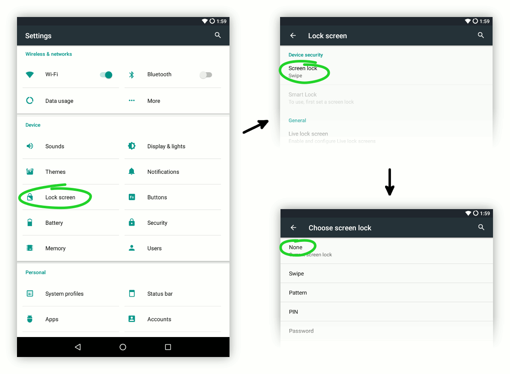

Kiosk mode hides Android system bars and apps.
Kiosk mode hides Android system bars and apps.
Homer Player offers several settings that allow useful customization: playback speed may be decreased for those hard of hearing, sleep timer may be set up to automatically pause after a short time of inactivity and so on.
Open Homer Player and tap the screen 5 times to enter the Settings screen.
In an audio player the lock screen is just an impediment. Let's disable it so that when the screen is switched on the apps are displayed right away.
Go to Settings → Lock screen → Screen lock and choose None.
The screen on buttons on the side of tablets are usually quite small and may be difficult to locate and press by people with poor vision or motor skills.
There are several other ways for switching the screen on. The availability of each option depends on the device's sensors and available accessories so you need to figure out what's best.
Homer Player doesn't need Internet access therefore you can disable WiFi and cellular connection (in phones) so that the battery lasts longer.
The easiest way is probably to enable the "airplane mode".
To make a simple audio player all the apps and Android functionality need to
be hidden so that they don't confuse the non-tech-savvy user. This is achieved
by hiding the system bars and making it difficult to leave the Homer Player
application.
This is called a "kiosk mode".
Kiosk mode hides Android system bars and apps.
Enabling the simple kiosk mode requires several steps:
Open Homer Player → tap the screen 5 times → Prevent exiting the application (kiosk mode) → enable the Simple mode... → choose Homer Player at the prompt that shows up.
Notice that the navigation bar at the bottom of the screen is hidden.
Swipe your finger up from below the edge of the screen. The
navigation bar shows up.
Now tap the ◯ (Home) button. The tablet will again
show a prompt asking which app to use to complete the action. You need to
choose Homer Player and tap Always.
Now when the tablet is switched on or resterted it will go directly to Homer Player.
The regular behaviour is restored by disabling the kiosk mode in Homer Player settings.